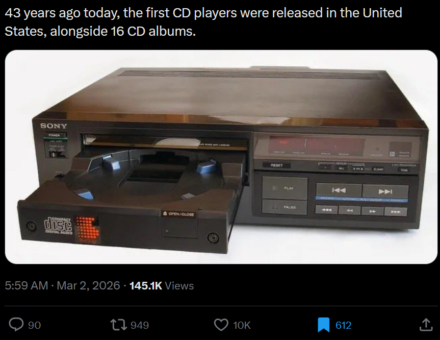
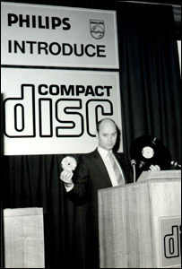
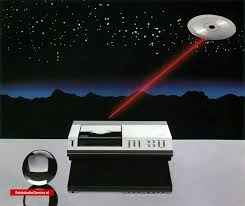

Nobody knows what the 3rd CD is
Nobody knows what the 3rd CD is
Did this title make you click?
Trivia I felt the need to fact-check
It is said that the very first CD player, alongside 16 CD albums, first appeared on March 3rd 1983. But that's not quite true! You may also be wondering what those 16 albums were. We'll get back to that.

Facts about Compact Disc
Before CD, there were cassettes and vinyls. They're still here.
Did you know that CD player lasers just cause differences in light reflections? All it does is scan for grooves in the CD. The Blu-Ray is a blue CD player laser that is smaller.
Philips and Sony both independently came up with CD. Philips originally focused on LaserDisc because they're idiots. Sony demonstrated a 150-minute 30cm-diameter (for context, during Philips' trials, CD is 11.5 cm in diameter) disc in 1978 in Brussels. I would not have mentioned this were it not have taken place in Belgium.
Fact-checking trivia because it's March 3rd unless you're not reading this on the day this post got published hi
Once LaserDisc flopped, Sony and Philips decided to join forces. Together, they would create the iconic Compact Disc. Philips reveals CD in Eindhoven, Netherlands. This is a local story. The event is called "Philips Introduce Compact Disc".
Philipps Introduce..

Fast-forward to 1982. The CD now has a diameter of 12cm because Sony insisted on the entirety of Beethoven's 9th Symphony. This might be the singular most popular fun fact ever. How do I measure the most popular fun fact ever. That's a question for another time...
Anyways, it is October 1st, 1982, and Sony is releasing the CDP-101 (101? Not, like, 100? 1? How did they arrive at 101?). Positively sexy device. It costs 168000 yen, which is about €2103 in today's money, adjusting for inflation. Innovation doesn't come cheap! On the same day, 50 CD albums release. Billy Joel's 52nd Street is recognized as the "first-ever" (in quotation marks because a band named ABBA did release a CD album earlier this year, but whatever. Note that this would make Billy Joel's album second, though. Wanna know what the third is?) DVD because it comes WITH your CDP-101. At the very least, you'll have something to listen to after dropping more than a SMIC on a CD player. If you scrolled back up to reread the initial trivia, you may notice that it is Entirely Wrong. Why is that?
i tricked you!!
Let's unfast-track from October 1st 1982. Something like September 1st 1982. Sony and Philips had reached an agreement wherein Sony and Philips both release a CD player on 1/10/1982. Philips, however, could not meet demand, for whatever reason, and ended up having to delay their launch. Sony got angry, and was able to bargain a Japan-only launch on 1/10/1982. With the aforementioned 50 CDs.
Fast-forward to March 1983. The Philips CD100 (how hard was that, Sony? Speaking of Sony, early CD100 units have Sony parts in them) is launched globally (and it looks so much worse than the CDP-101!!!!), alongside Sony's CDP-101. I can't find a price for the CD100, other than originally being 1995 guilders, which is roughly €900, which would be so much goddamn money for a worse player than the CDP-101, so I'm assuming I made some kind of error and that it is more reasonably priced. Outside of Japan, people only got access to 16 release day DVDs, which has something to do with CBS? I don't get it. What happened to the 34 other CDs? I have absolutely no idea. Hell, I don't even know if those 16 were included in Japan's 50!
Re-fact-check
On 2/3/1983, first two CD players released in America and Europe, alongside the "first" (this is too much of a headache to count, just ignore the Japanese albums and rule out the other ones, I guess) 16 CDs.
Wow, my research was useless.
What's the 3rd CD? And the 4th? And the 5th? (...) And the 50th?
Billy Joel's 52nd Street, Toto’s Turn Back, Pink Floyd’s Wish You Were Here, Michael Jackson’s Off the Wall. These are the only confirmed ones I know of. Everything else is simple guessing. If you are curious and are so inclined to look CDs up yourself, here are some tricks:
-Look up Sony's catalogue prefixes. The most common example I could give is 35DP - which, as far as I can tell, is Sony's pop lineup? Anyways, you should only really look at the first 50 catalogue IDs before abandoning it. This is a good resource example. We can't assume the first 50 CDs albums were all pop music, but we can at least guess that some of the top 50 made its way onto CD players' debut launch.
I believe my, or anyone trying to find the original list of albums' best bet is a press article from the Japanese or global release date (the Japanese article would theoretically be more complete, but, erm, I don't know how to read Japanese).
